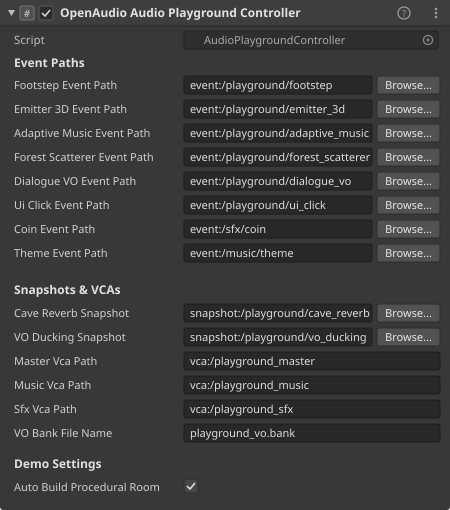
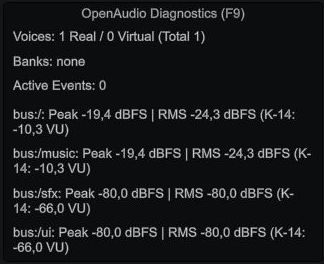

Componentes no Inspector da Unity
Configure a primeira cena sem escrever um script. Você vai carregar o banco antes de disparar a moeda e depois experimentar posicionamento e diagnóstico.
Ouça a moeda ao iniciar a cena
Prepare o banco ExampleGameProject.bank e seu catálogo conforme o capítulo 8.
- Na Hierarchy, crie um GameObject vazio chamado OpenAudio. No Inspector, use Add Component e procure OpenAudio Audio Manager.
- Crie um segundo objeto, Banco, com OpenAudio Studio Bank Loader. Em Bank Files, adicione
ExampleGameProject.bank. Escolha Synchronous e Awake. - Crie um terceiro objeto, Moeda, com OpenAudio Studio Event Emitter. Em Event Path, selecione
event:/sfx/coin. Use Play Trigger em Start e Spatial Mode em None. - Entre em Play Mode. Você deve ouvir um disparo curto. Ao sair e entrar novamente, o Start dispara o evento outra vez. Se faltar som, confira o caminho e o nome do banco no Console.
Audio Manager

Cria o motor e o atualiza a cada quadro. Use um objeto dedicado na cena inicial. Ele persiste quando a cena muda e descarta duplicatas.
| Controle | O que muda |
|---|---|
| Sample Rate / Channels | Amostras por segundo e canais de saída. Comece com 48.000 Hz e 2 canais para estéreo. |
| Max Physical Voices | Limite de vozes reais. Em um teste com muitas fontes contínuas, reduza o limite e compare as contagens real e virtual no overlay. |
| Initialize No Device | Inicializa sem saída física. Deixe desmarcado para ouvir os exercícios. |
| Pause On Focus Loss | Pausa o master quando o jogo perde o foco. Deixe desmarcado ao alternar para o Studio durante a edição ao vivo. |
| Enable Live Linking / Live Host / Live Port | Ativa e endereça a conexão em Editor e Development Build. Para as duas aplicações no mesmo PC, use 127.0.0.1 e 7450. |
Studio Bank Loader

| Controle | O que muda |
|---|---|
| Bank Files | Lista de bancos. Caminhos relativos partem de StreamingAssets. Com vários bancos, carregue o Master antes dos bancos de conteúdo. |
| Load Mode | Synchronous retorna após a tentativa de carga. Asynchronous inicia em segundo plano. Aguarde o estado Loaded de cada banco necessário antes de disparar seus eventos. |
| Load Trigger | Awake carrega na inicialização do objeto, Start na fase de início e Manual via Load(). Evite depender da ordem entre dois componentes em Start. |
| Unload Trigger | OnDestroy descarrega ao destruir o objeto. Manual delega o descarregamento a Unload(). |
| Preload Sample Data | Campo reservado no Inspector. A implementação atual segue o mesmo caminho de carga com a caixa marcada ou desmarcada. |
Studio Event Emitter e seletor de eventos

[EventRef] usam o mesmo seletor de caminho do emitter. Digite o caminho completo ou abra Browse… ao lado do campo.| Controle | O que muda |
|---|---|
| Event Path | Caminho completo do evento. O botão Browse… abre um menu hierárquico com os eventos dos catálogos válidos. Se a lista vier vazia, confira os dois arquivos e digite o caminho completo para testar a reprodução. |
| Play Trigger | Awake, Start ou OnEnable automatizam o disparo no ciclo de vida do objeto. OnTriggerEnter reage à entrada em uma área de colisão. Manual espera por Play(). |
| Stop Trigger / Stop Mode | Escolha desativação, destruição, saída da área ou Stop() manual. Immediate corta o som. AllowFadeout permite a saída configurada. Compare os dois com um evento que tenha uma cauda audível. |
| Spatial Mode / Is 3D | None para sons 2D/UI. Spatial2D para jogos 2D no plano XY. Spatial3D para posicionamento tridimensional completo no espaço do jogo com cálculo de atenuação e cone. |
| Min Distance / Max Distance | Unidades de mundo (metros). Até a distância mínima, o som tem ganho integral (0 dB). A partir da máxima, silêncio ou patamar mínimo configurado. |
| Cones Direcionais (3D) | Inner Angle (zona de 100% de energia), Outer Angle (zona de transição) e Outer Gain (atenuação sonora quando o ouvinte está atrás da fonte, ex.: escapamento de carro ou alto-falante direcional). |
| Sound Size & Min Extent | Sound Size: Raio aparente da fonte sonora para envelopment estéreo (uma cachoeira gigante envolve o jogador em estéreo quando ele se aproxima, em vez de soar como um ponto microscópico). |
| Initial Parameters | Pares nome e valor aplicados na inicialização da instância. Use nomes presentes no evento publicado. |
Built-in 3D Parameters Automáticos (Sem Código)
O motor OpenAudio calcula em tempo real variáveis geométricas e cinemáticas entre o StudioEventEmitter e o StudioListener ativo. Se o evento criado no Studio possuir parâmetros locais com estes nomes canônicos, eles são atualizados automaticamente a cada quadro pelo motor sem nenhuma linha de script C#:
| Nome do Parâmetro Canônico | Faixa Típica | Grandeza Física e Aplicação |
|---|---|---|
Distance |
0 a Max Distance (m) | Distância euclidiana em linha reta entre emissor e ouvinte. Use para modular filtros passa-baixas (abafamento do ar) e envio para reverb de ambiente. |
Direction |
-180° a +180° | Ângulo horizontal no plano do ouvinte (0° = à frente, ±90° = lados, ±180° = atrás). Use para transições de microfonação ou simulação de HRTF. |
Elevation |
-90° a +90° | Ângulo vertical de inclinação (-90° = abaixo do ouvinte, +90° = acima da cabeça). Ideal para passos no andar de cima ou helicópteros sobrevoando. |
EventConeAngle |
0° a 180° | Desvio angular do ouvinte em relação ao eixo frontal do emissor. Use para atenuar agudos ou alterar o timbre de fontes direcionais. |
Speed |
0 a 100+ m/s | Velocidade relativa entre emissor e ouvinte. Útil para modular vento relativo, rotação de motores ou intensidade de atrito em alta velocidade. |
Studio Listener e Orientação Tridimensional
Adicione OpenAudio Studio Listener ao GameObject da câmera ou do personagem. O pacote usa um listener ativo por sistema. Colocar vários componentes na cena não cria uma mixagem independente por câmera; split-screen com uma mistura espacial por visão não é suportado por este componente.
Teste de emissor à frente e atrás
Use o banco publicado de example_project/project.json e o catálogo correspondente. O teste usa event:/music/theme e compara a mesma fonte a quatro metros do ponto de escuta.
+--------------------------------------------------------------------------+
| GEOMETRIA DO ENSAIO 3D NA UNITY (FRENTE vs COSTAS) |
+--------------------------------------------------------------------------+
| |
| Listener (Frente) |
| (0, 0, 4) |
| [ OUVINTE ] |
| ^ |
| | d = 4 m |
| | EventConeAngle = 0° |
| | Ganho do Cone = 1.0 (0 dB) |
| | |
| +-----------------+ |
| | EMISSOR | Orientado para +Z |
| | (0, 0, 0) | Inner: 90° / Outer: 180° |
| | | Outer Gain: 0.25 (-12 dB) |
| +-----------------+ |
| | |
| | d = 4 m |
| | EventConeAngle = 180° |
| | Ganho do Cone = 0.25 (-12 dB) |
| v |
| [ OUVINTE ] |
| Listener (Costas) |
| (0, 0, -4) |
| |
+--------------------------------------------------------------------------+- Crie uma cena de teste com um OpenAudio Audio Manager. Configure um OpenAudio Studio Bank Loader com o banco do exercício em Bank Files, carga Synchronous e Load Trigger: Awake. Adicione um único OpenAudio Studio Listener à câmera em
(0, 0, 4), voltada para a origem. - Crie um emissor na origem voltado para
+Ze adicione OpenAudio Studio Event Emitter. Selecioneevent:/music/theme, Play Trigger: Start e Spatial Mode: Spatial3D. - Defina Min Distance como
1 m, Max Distance como20 m, Rolloff como Linear e os campos de cone Inner Angle, Outer Angle e Outer Gain como90°,180°e0.25. Use o painel 3D Spatializer para testar distância e pan na prévia local do Studio. - Entre em Play Mode e ouça o tema. Saia de Play Mode, mova a câmera para
(0, 0, -4), aponte-a para a origem e entre de novo. A distância será a mesma (4 metros) e, atrás do emissor, o ganho do cone será de um quarto do ganho frontal (picos medidos no Editor 6000.0.34f1:0,5750na frente vs0,1437nas costas, confirmando a atenuação de−12 dB). - Durante a reprodução, o motor calcula
Distance,Direction,Elevation,EventConeAngleeSpeed. Para verificar por código, leia cada valor depois da atualização dos componentes comemitter.Instance.GetParameter(nome, out var valor, out _). Neste teste, a distância deve permanecer em4e o ângulo do cone deve ir de0°para180°. Para usar esses nomes nos seletores de autoria, declare os parâmetros locais correspondentes.
Ao terminar, saia de Play Mode e volte a câmera a (0, 0, 4), voltada para a origem.
Diagnostics Overlay

Adicione OpenAudio Diagnostics Overlay para acompanhar a telemetria em tempo real no canto superior direito da janela de jogo durante Play Mode no Editor ou em Development Build. A primeira linha exibe a contagem de vozes no formato Voices: <RealVoices> Real / <VirtualVoices> Virtual (Total <TotalVoices>), onde as vozes virtuais correspondem a Total - Real. Abaixo, exibe bancos dos loaders encontrados, instâncias ativas e níveis dos barramentos (Peak, RMS e K-14). Configure Visible, Toggle Key (F9 por padrão), Watched Events e Watched Buses. Toque um evento contínuo, observe as contagens, pare o evento e compare.
Por que Awake, Start e Manual mudam o resultado?
No exercício, o Manager inicia o motor. O Loader usa Awake com carga síncrona. O Emitter dispara em Start. Se trocar a carga para Asynchronous, Start pode ocorrer enquanto o banco ainda está em Loading. Use Manual no Emitter e chame Play() depois de verificar que o banco requerido chegou a Loaded.
Compare Start e Manual com o mesmo evento. No segundo caso, entrar em Play Mode carrega o banco e o emissor espera uma chamada. Para a primeira reprodução, confira se o sistema tem saída física e se Spatial Mode está em None. Depois, use o teste de distância para perceber o que o listener acrescenta.
Termos da cena
- GameObject
- Objeto que recebe componentes na cena.
- Inspector
- Painel que mostra as propriedades do objeto selecionado.
- Trigger
- Condição que dispara uma ação. Pode ser uma fase do objeto ou a entrada em uma área.
- Listener
- Ponto de escuta usado para calcular posição e distância.
- Voz virtual
- Reprodução acompanhada pelo motor sem ocupar uma voz física de saída.